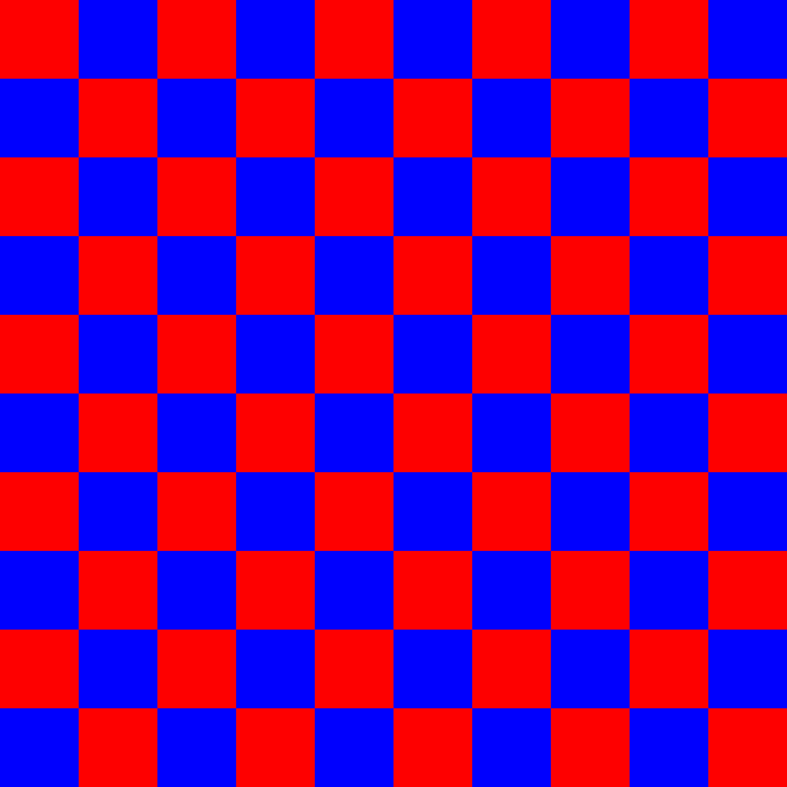

Image Node¶
Read¶
-
class
image_utils.image.Read(image_path='', width=100, height=100, channels=4, pixel_type=OpenImageIO.BASETYPE.FLOAT)[source]¶ Read an existing image
Example:
>>> # import the Read module >>> from image_utils.image import Read >>> # read an EXR image >>> read_node = Read('input.exr') >>> # pre-multiply it by its alpha >>> read_node.premult() >>> # save it as tiff >>> read_node.write('output.tif')
-
channels¶ A tuple of strings containing the names of each color channel
>>> # import the checker module >>> from image_utils.image import Read >>> read_image = Read('grid-overscan.exr') >>> print(read_image.channels) ... ('R', 'G', 'B', 'A')
Return type: tuple Returns: list of existing channel
-
data_window_coordinate¶ X and Y coordinate of data window (a.k.a. display window)
>>> # import the checker module >>> from image_utils.image import Read >>> read_image = Read('grid-overscan.exr') >>> print(read_image.data_window_coordinate) ... (-250, -250, 1250, 1250)
Return type: tuple
-
duplicate(pixel_type=None)[source]¶ make a exact copy of this image. If a file_format is provided, this will get the specified pixel data type rather than using the same pixel file_format as the source ImageBuf.
Example:
>>> from image_utils.image import Read >>> from image_utils.pixel_type import PixelType >>> # create an image instance >>> A = Read('foo.exr') >>> # make a copy of it >>> B = A.duplicate(PixelType().bit8)
Rtype pixel_type: OpenImageIO.BASETYPE Parameters: pixel_type – new image type. i.e, float, half, 8bit Return type: Image Returns: duplicate of this image
-
file_format¶ Returns the file format of the image”
>>> from image_utils import image >>> image_node = image.Read('foo.exr') >>> print(image_node.file_format) ... openexr
Return type: str
-
Constant¶
Create constant image with specific dimension and color
>>> # import the required module
>>> from image_utils.image import constant
>>> # create a red 4k by 3k constant image in red
>>> constant_img = constant(4000, 3000, (1, 0, 0, 0))
>>> # save it as png
>>> constant_img.write('foo.png')
| type width: | int |
|---|---|
| param width: | image width |
| type height: | int |
| param height: | image height |
| type color: | tuple |
| param color: | rgba color |
| type data_type: | OpenImageIO.BASETYPE |
| param data_type: | |
| type of image | |
| rtype: | OpenImageIO.ImageBuf |
| return: | constant image |
Checker¶
Create checker image. default is black and white checker color
# import the checker module
from image_utils.image import checker
# create a 4k checker, red by blue color, with 10 cells
checker_image = checker(4000, 4000, (1, 0, 0), (0, 0, 1), 10)
checker_image.write('check_me.png')
Result
{kind=link}
| type width: | int |
|---|---|
| param width: | image width |
| type height: | int |
| param height: | image height |
| type color_a: | tuple |
| param color_a: | color A |
| type color_b: | tuple |
| param color_b: | color B |
| type cells: | int |
| param cells: | number of cell rows |
| type data_type: | OpenImageIO.BASETYPE |
| param data_type: | |
| type of image | |
| rtype: | OpenImageIO.ImageBuf |
| return: | checker image |